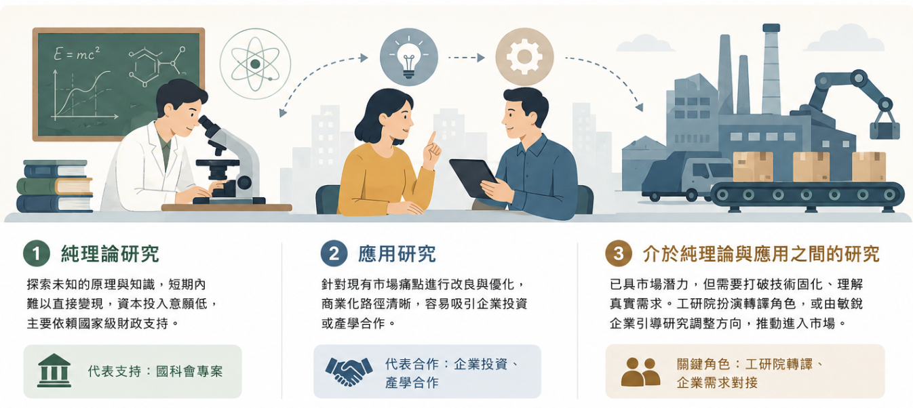

學術研究如何走向產業應用？

在科技領域中，學術界的研究大致可以區分為三種模式，純理論研究、應用研究、介於純理論與應用之間的研究。
第一種是「純理論研究」，這類研究在短期內極難變現，資本家通常不會投入這種難以賺錢的事上，只能依賴國家級財政（如國科會專案）的支持。
第二種是「應用研究」，直接針對現有的市場痛點進行改良。因為商業化路徑清晰，最容易吸引企業投資或產學合作。
第三種則是「介於純理論與應用之間的研究」。這類研究本質上不是純理論，而是已經處於「過一段時間就可以進去市場上」的階段。然而，大多做這類研究的人，想讓他的研究到市場上時，往往會被技術固化，而不是真的了解市場。要打破這種技術固化，其中工研院就扮演了這樣的轉譯角色；同時，也有許多時候是由敏銳的企業進行對接，帶著真實的市場規格與法規需求，主動引導這類研究修正方向並進入市場。
✅ 阻燃技術：由法規、人身安全驅動的應用研究
我們常聽到的「阻燃劑」，正是非常典型的應用研究。
許多塑膠高分子產業都需要用到阻燃劑，因為產品必須符合嚴格的國際安全法規才能上市。阻燃標準主要有 UL 94 V-0、V-1、V-2 等級，UL 94 V-0 為最高等級的阻燃標準。每種應用到塑膠高分子的產業，所需通過之阻燃標準都不相同，以下列三項為例：
1. 電線電纜業： 必須強制符合 UL 94 V-0 標準。因為電線遍布建築物與電器內部，一旦起火極易沿著管道蔓延，因此法規嚴格限制其材料在離火後必須在 10 秒內自熄，且絕對不允許產生帶火的融化滴落物，以防引燃周邊的裝潢或家具。
2. 印刷電路板（PCB）： 由於高密度佈線容易局部發熱，業界幾乎全面強制要求達到最高等級的 UL 94 V-0，甚至在車用或伺服器板上，還會嚴格限制氧指數（LOI）必須大於 30%，確保極端高溫下也不會自燃。
3. 一般的電器配件、電子外殼或建材裝飾： 根據風險評估與使用情境，有時允許使用 UL 94 V-2 等級。此標準雖然允許材料燃燒時有少許塑膠滴落物，但該滴落物絕對不能引燃測試箱底部的標準棉花。
📊 數據：掌握國內阻燃技術研發脈絡
為了協助想了解國內學界阻燃研究發展趨勢、研究團隊分布及指導能量之研發人員，本公司特別整理 《國內含「阻燃」標題之論文統計資料集》，並提供 Excel 檔案下載。
資料總量： 共收集 61 筆資料。
涵蓋年份： 民國 110 年至 114 年間之國內碩博士論文。
統計內容： 包含指導教授分布及各年度論文數量。
本資料集來源為「臺灣博碩士論文知識加值系統」，以「阻燃」作為檢索詞進行資料蒐集，並以論文名稱包含「阻燃」字樣作為收錄條件。因此，本資料集未必涵蓋所有從事阻燃、耐燃、難燃、防火材料、燃燒抑制等相關研究之學位論文。
← 返回產業資訊列表